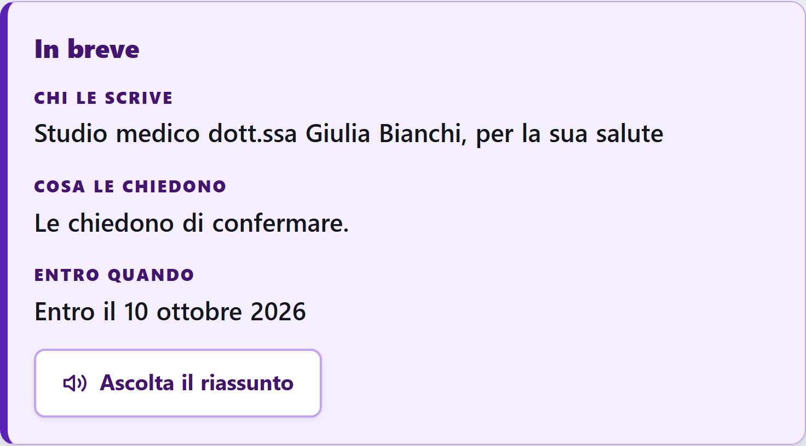

La sua posta,
spiegata.
Rendere autonoma la gestione della posta con il medico, il Comune e l’INPS — dalla lettura alla risposta inviata — per chi il computer non l’ha mai usato per lavoro.
Proposta progettuale · Hagenthon · Accenture Application Engineering
Sa cosa vuole rispondere.
Il riquadro bianco glielo impedisce.
Una lingua che esclude
«Ai sensi e per gli effetti degli artt. 33 e 40 del D.P.R. 445/2000». Chi scrive lo sa: chi legge deve chiamare qualcuno per farselo tradurre.
Il foglio bianco
Preme Rispondi e trova un riquadro vuoto. Sa perfettamente cosa vuole dire. Non sa da dove cominciare a scriverlo, né se sta sbagliando.
La truffa sembra vera
La finta Poste e l’INPS autentico dicono le stesse due parole: urgente e soldi. Distinguerle richiede competenze che non le sono mai state date.
Non manca la testa. Manca un’interfaccia che parli la sua lingua. Il risultato è rimandare, rinunciare, o aspettare che passi il nipote — con perdita di autonomia. È il punto di partenza di questa proposta.
Il perimetro: una comunicazione, dall’inizio alla fine
Persona target · Torino
- Difficoltà
- Cataratta iniziale, tremore alla mano, artrosi. Usa i vocali di WhatsApp: sa parlare, non digitare.
- Contesto d’uso
- La posta di ASL, Comune e INPS, su un tablet appoggiato al tavolo.
- Blocco tipico
- Preme Rispondi, trova un riquadro vuoto. Chiude, e aspetta domenica.
- Cosa vuole
- Confermare da sola la visita del 14 ottobre.
La journey coperta dalla demo
- Apre la casella Ogni messaggio ha già un semaforo.
- Legge in parole semplici Chi scrive · Cosa chiedono · Entro quando.
- Ascolta ad alta voce Riassunto e messaggio, letti dal dispositivo.
- Sceglie la risposta Tre intenti, con documento o foto in allegato.
- Rilegge e conferma Se la fa rileggere, detta un’aggiunta. L’invio è suo.
- Oppure gira a Guada In un tocco. Non un fallimento: un esito.
La persona di fiducia — configurabile
Guada, il nipote. Ogni email può essergli girata con un pulsante sempre presente, non solo quando il semaforo è giallo: il momento in cui una persona si sente in difficoltà non è quello in cui il sistema ha dei dubbi. La mail passa a «Guada sta verificando», così Maria sa che non aspetta più lei. Non conta come autonomia: chiedere aiuto non è fare da sola.
Dimostrare che l’autonomia è possibile, non solo desiderabile
Portare a termine una comunicazione con un ente — leggerla, capirla, risponderle — senza l’intervento di un familiare, mantenendo sempre il controllo umano sulla decisione finale di invio.
Il metro non è la soddisfazione: è il compito portato a termine. In interfaccia il guadagno è un numero che Maria vede crescere — «Risposte inviate da sola» — non un aggettivo in una slide.
Un assistente accanto, non un’app da imparare
Semaforo con l’azione
Verde, giallo, rosso — e sotto il verdetto, sempre un pulsante. Sul rosso, il numero verde ufficiale preso da una tabella nel codice, mai dall’email.
Il burocratese tradotto
Chi le scrive · Cosa le chiedono · Entro quando. Tre righe in cima, prima di tutto il resto. L’originale resta sempre a un tocco.
Risposta guidata, e la voce
La risposta si sceglie, non si scrive. Poi si ascolta, e si può aggiungere qualcosa parlando: il riquadro bianco non compare mai.
FactGuard, il controllo
Nessuna versione semplificata raggiunge la persona senza che date, importi e orari siano stati verificati uno per uno. Il controllo non è un modello.

Schermata reale del prodotto
Accessibilità come vantaggio competitivo, non come costo di conformità
Compliance anticipata
L’European Accessibility Act è già in vigore. Essere pronti riduce il rischio normativo invece di rincorrerlo a scadenza.
Meno costi di assistenza
Meno chiamate allo sportello per farsi leggere una lettera, meno pratiche scadute perché nessuno aveva capito il termine.
Fiducia, e meno frodi
Il semaforo insegna a distinguere una comunicazione vera da una truffa. Ogni tentativo bloccato è un danno evitato al cittadino e all’ente.
Scalabile ad altri canali
Lo stesso motore — traduzione, verifica, risposta guidata — si applica a portali, moduli online e pratiche, non solo alla posta.
Il costo marginale di una casella processata è zero. Il motore è deterministico per progetto: nessun consumo per messaggio, nessuna dipendenza da crediti di terzi, e il dato sensibile resta sul dispositivo.
La demo è pronta. Parliamo del pilot.
Oggi
Prodotto funzionante
La journey completa gira davvero: sei email reali, semaforo, traduzione, voce, risposta e verifica. Si clona e si esegue senza configurare nulla.
Prossimo step
Pilot con utenti veri
Un gruppo reale su un canale scelto insieme — ASL, Comune o ente previdenziale — con la misura dell’autonomia già integrata nel prodotto.
Scalabilità
Dagli enti ai portali
Lo stesso motore di traduzione e verifica esteso agli altri servizi digitali, e la seam per il modello linguistico già predisposta.
Prima: domenica prossima. Ora: quattro minuti.